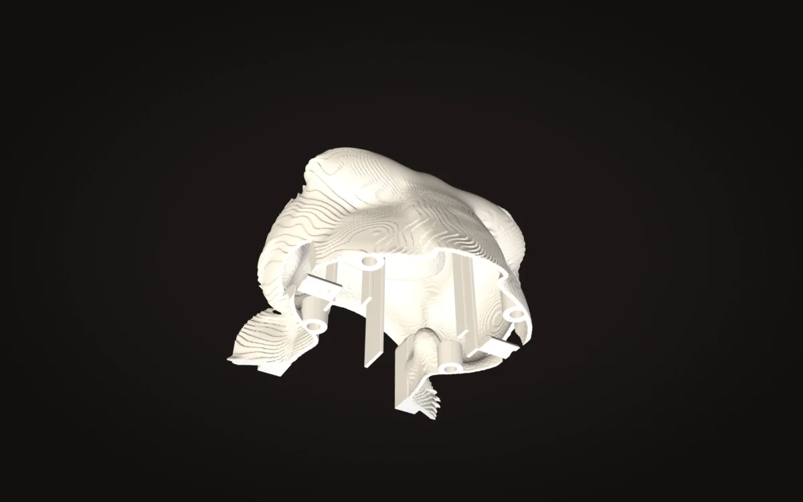

Digital · text2print on GitHub ↗
A Claude Code skill that
models parts for 3D printing.
text2print turns a sentence into CadQuery code, checks printability, and waits for four approvals before delivery.
Modeling is the slow part.
The skill takes a sentence and returns a verified file. Each phase is checked before the next starts; the last check is the slicer.
One skill, four modes, ten phases.
A new design runs requirements, repository search, dimensions and a design brief before any geometry, then base shape, features, a structural pass against the material’s rules, and a finish. The other three modes take an existing STL to reference, fix overhangs in, or audit.
Twelve rule tables cover materials, fits, snap arms, living hinges, print-in-place joints, minimum features, fasteners, board mounts and thin walls.
A studio that watches the folder.
A single-file Flask app on port 7384 streams each new STL, render and state change to the browser within half a second. It shows the model on a 256 mm plate, the phase rail, parameters, slicer report and activity log.
At design-brief, phase-1-base, phase-2-features and final-review, the skill writes a question to the state file, the studio shows an approve-or-change banner, and a watcher waits up to 30 minutes. The skill can’t pass a gate on its own; a change request redoes the phase.
printcheck, overhangs, then PrusaSlicer.
printcheck slices the mesh every 0.4 mm and reports islands (unsupported material, fatal) in world coordinates, plus overhang area past 50°, first-layer contact and features under 0.9 mm. overhangs measures only steep exterior faces, probing 1.5 mm along each normal to skip inner skins that falsely flagged hollow parts.
PrusaSlicer then runs headless with named profiles (0.4 mm nozzle at 0.16 mm layers for the bust, 0.08 mm for the eye plugs, 0.8 mm nozzle at 0.32 mm for the wave tiles) and its log is checked for warnings. In a control test, a deliberately floating pin triggered “Floating object part, Loose extrusions”.



The ape is a six-inch kaiju bust: a signed-distance field on a 0.5 mm grid, hollowed to a 2 mm wall, split into five pinned shells. Horns, fangs and eyes print as separate plugs at finer layers. All five shells are watertight with zero islands.

- Bust150 × 165 × 161 mm · 2.7 M triangles
- Filament≈370 g PLA+ across 26 parts · ≈52 h
- Wave panel12 tiles · 2,000 g · ≈51 h · 0 supports
Sculpt in a field, split with a plane.
Every feature is a distance function blended into the last; the mesh is extracted at the end. Hollowing by distance transform is exact where mesh offsetting is not. Seams are pinned butt joints; tongue-and-groove halved bed contact and went non-manifold.
Hashed fur read as scales and left 800 crumbs in the slicer, so it became a continuous raked shingle; rimmed eyes read as goggles, puck ears as headphones, brow furrows as cassette slots. At six inches, each feature gets one clear idea, with fine detail only in small areas a printer can hold.
- LanguagePython 3.10–3.12 · CadQuery · trimesh · manifold3d
- RuntimeClaude Code skill · PrusaSlicer CLI
- PublishedFebruary 2026 · MIT license
Built and run by Collin Stilwell, product security engineer.